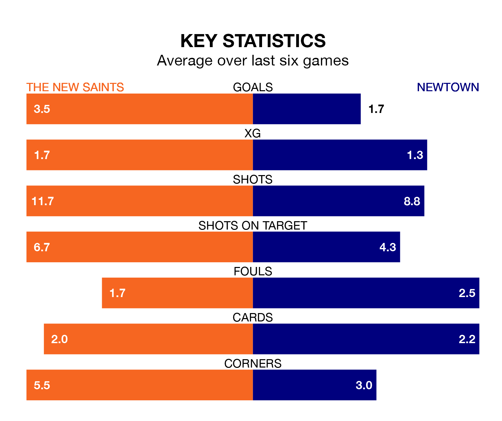

Relegation candidates Newtown face a challenge away against high-flying The New Saints at the Park Hall Stadium on Tuesday.
Newtown are fifth in the Welsh Premier League table, and have picked up 10 wins and three draws in their 22 games to date.
The Saints, meanwhile, are top of the standings with 62 points, having won 20 and drawn two.
With 77 goals in 22 games so far this season, The New Saints are the league's highest scorers with 3.5 goals per game. And they are conceding fewer than average, letting in 14 goals at a rate of 0.6 per game.
Newtown are also above average scorers, with 1.6 goals per game, compared to a league average of 1.5. They have conceded 1.4 goals per game.
The Saints are in exceptional form in Welsh Premier League, with six wins and no losses from their last six games.
With two wins and four losses over that period, the White Stars's form is much worse – they have taken six points from 18, compared to the home side's 18.
In the last 10 years, The New Saints and Newtown have played each other on 35 occasions. The New Saints won 25 of them, Newtown four, and they drew six times.
On average, the Saints scored 2.8 goals and the White Stars 0.9 in those matches.
Their last meeting was on January 13, when The New Saints won 3-1 at home.
The New Saints' last match was on January 13, a 3-1 win against Newtown, with Brad Young, Declan McManus and Jordan Williams getting the goals for the Saints.
Newtown lost 3-1 against The New Saints last time out, also on January 13, with Jason Oswell on the scoresheet.
Updated: 09:21 (UTC), 30/01/24